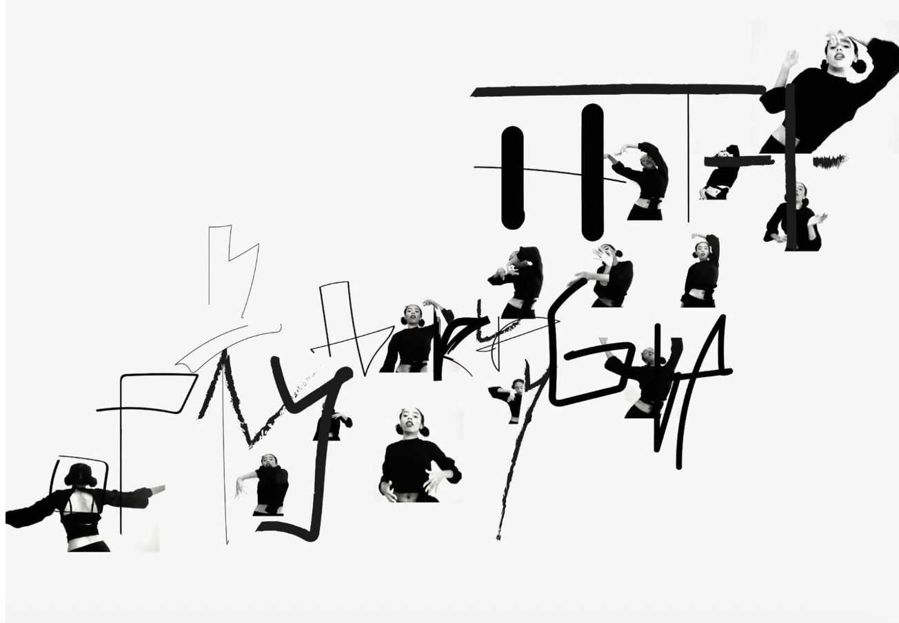
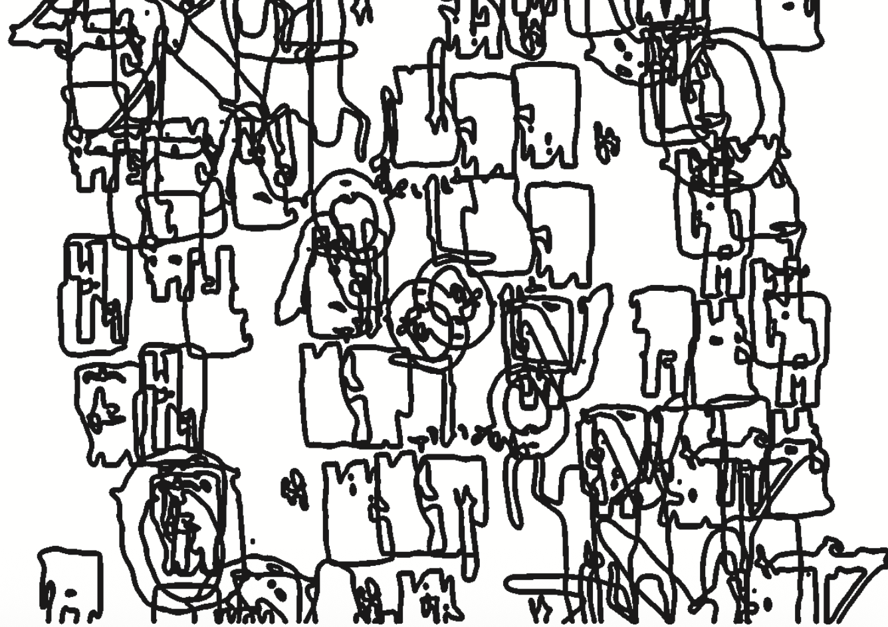
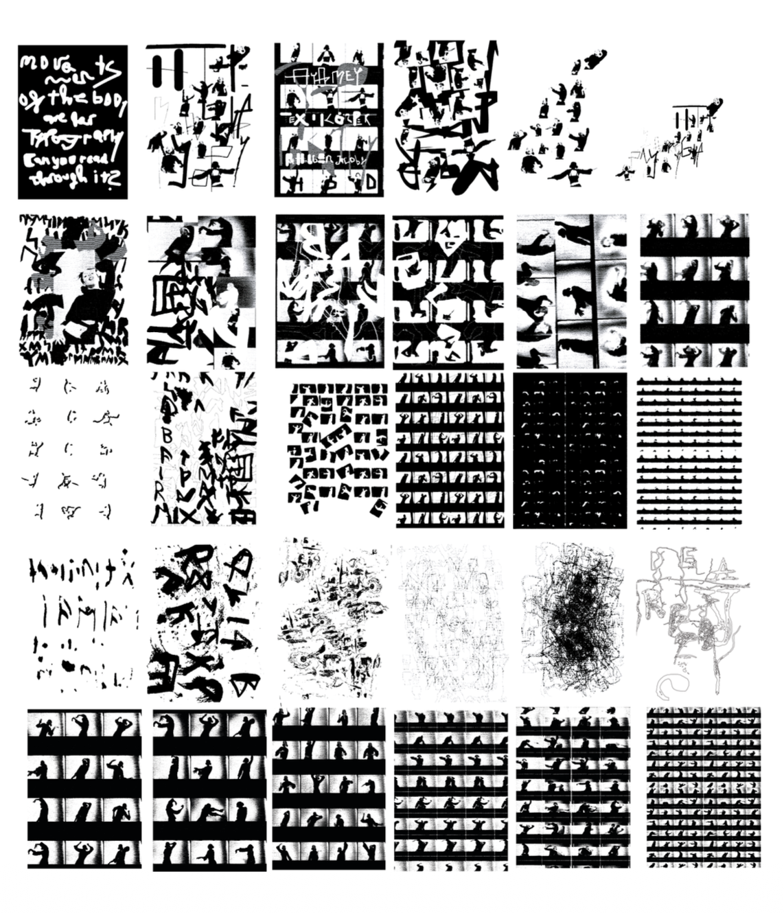
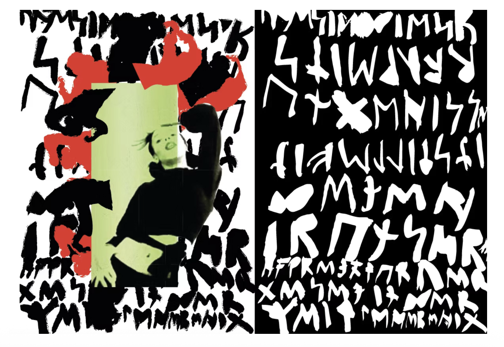
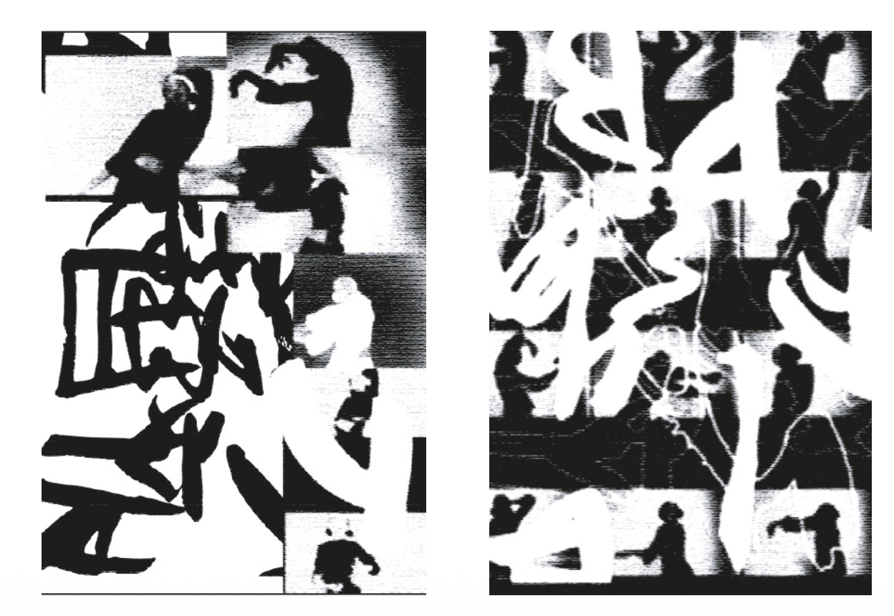
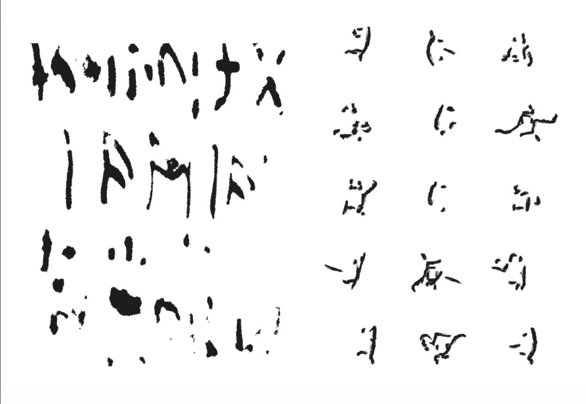
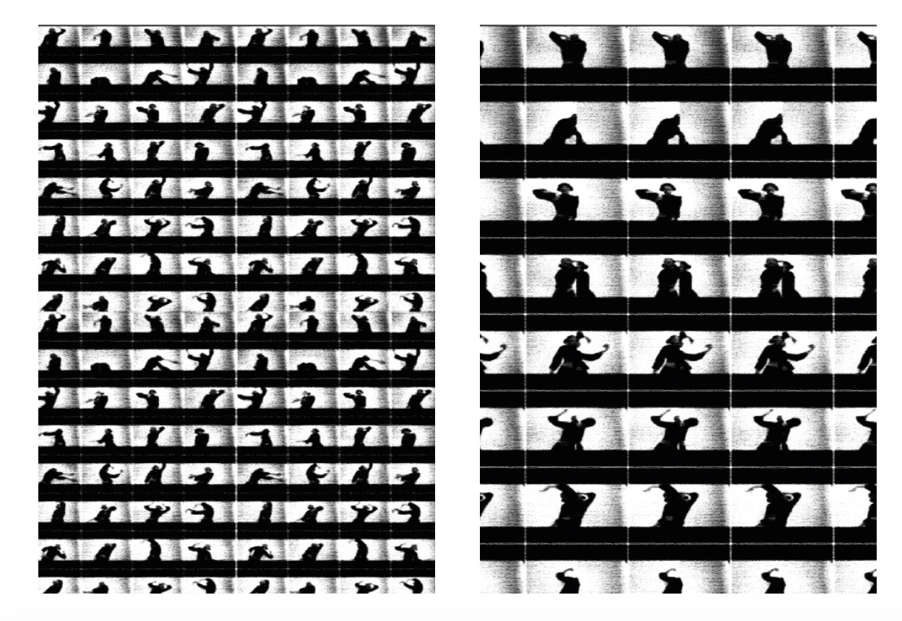
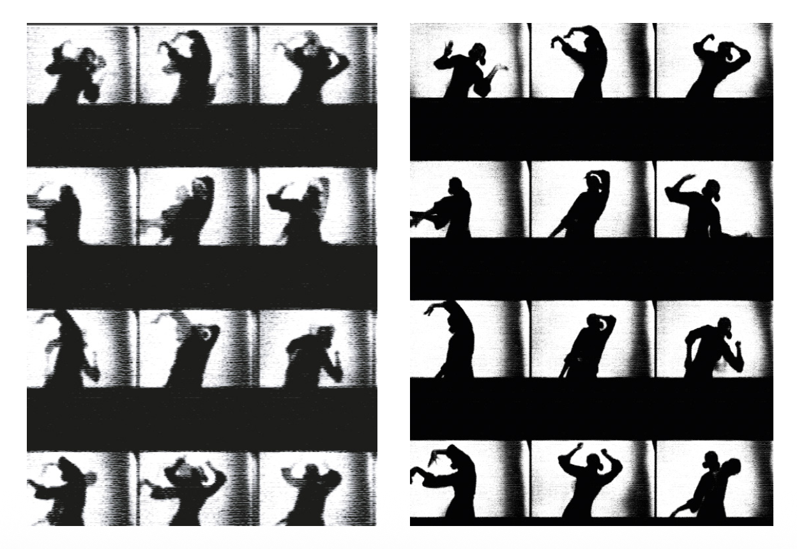
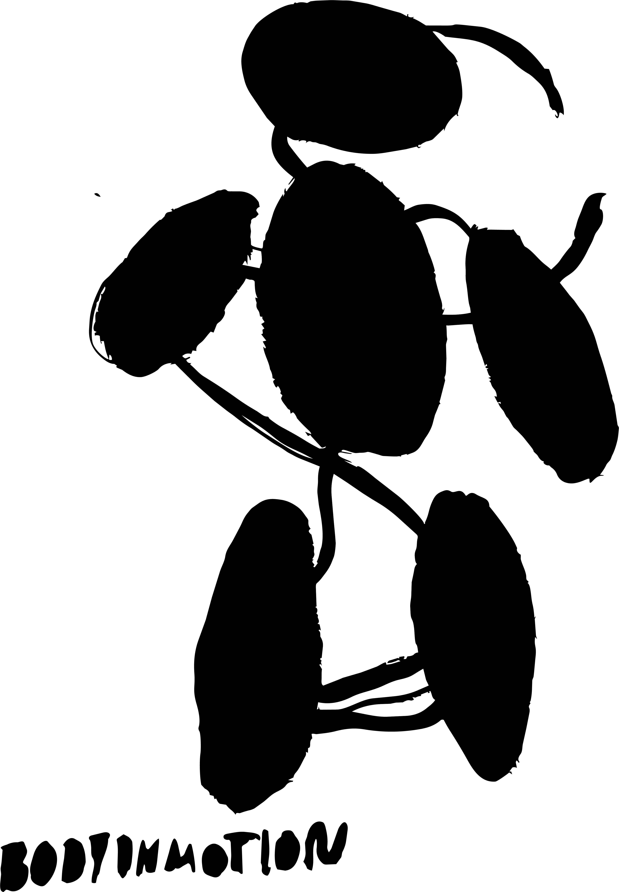

The Human Typography
Our body is always in motion, a breathing typography. Movement and body language reveal hidden intentions and emotions, often before words can.
For this project, I left rules and fixed outcomes behind. I wanted to create traces: something that stays in the mind, something to remember, question, and feel.
During the process, I began to see the body as its own language. The brain communicates without our awareness, through gestures, reactions, and instinct. I wondered whether body language could become typography and emotions could be translated into asemic writing.
I began without a detailed plan. The drawing shown at the bottom of this page reminded me that everything is connected: body, mind, and emotion. I simply wanted to discover what my body would write.







The Communication Within
